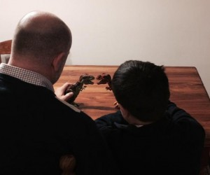
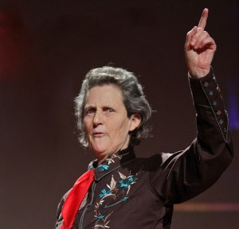

Inicio de talleres de Teatro, Manos Creando, Habilidades Sociales y Grupo de Apoyo para Padres 2016
Escrito por: LoloAspergerCL el abr 7th, 2016
En cinco años, hemos hecho un progreso lento, pero constante en el conocimiento sobre las condiciones del espectro autista. La palabra Asperger que hasta hace poco era totalmente desconocida, despertando el temor de padres y profesionales de la Educación, ya está en el inconsciente colectivo de los chilenos. Sin embargo, conocer, verbo tan general, tan poco apropiado para la medición y la precisión que el tema requiere, hace mucho tiempo dejó de bastarnos. En muchos niveles donde ese rigor no sólo es esperado, sino que absolutamente indispensable para maximizar los potenciales del colectivo, las referencias al Autismo como una enfermedad, o por el contrario, como una raza superior de genios aumenta la brecha entre las personas, y disminuye también nuestras perspectivas de alcanzar la equidad para todas las personas que vivimos en Chile. En su gran mayoría, todas las autoridades y profesionales de la educación y salud están familiarizados con el Asperger y los desafíos que la condición representa. Ya conocemos, pero ahora… ¿Qué hacemos?

Carta a mi Jorgito
Escrito por: LoloAspergerCL el jun 8th, 2015
Querido Jorgito:
Desde el momento que te tomé por primera vez en mis brazos supe que ibas a ser un niño muy especial, querido, esperado y por sobre todo, mi niño. Con el paso del tiempo fuiste creciendo, y como todo niño te fuiste enfrentando a los desafíos que te colocaba la vida casi sin darte cuenta. Te demoraste en decir tus primeras palabras, te era difícil hacer amigos, costaba que te entendiéramos, pero lo que nunca faltaba… era una sonrisa tuya, llena de amor.
Es difícil expresar todo lo que siento por ti, cuando te escucho hablar de tus dinosaurios, cuando te ríes y diviertes con tus juegos tan especiales, o cuando lanzas una de tus ideas casi sin pensar que nos causan mucha risa por su ingenuidad.

El Ciudadano Asperger
Escrito por: LoloAspergerCL el may 20th, 2015
El pasado Viernes 15 de Mayo, fuimos invadidos por la molestia de la comunidad Asperger ante los dichos de Ramiro Mendoza, ex Contralor General de la República. Y es que a pesar de haber advertido que sus comentarios “estamos empezando a generar una ciudadanía Asperger”, no eran hechos en un tono burlón, y muy probablemente así fuera, el emitir un juicio desde medias verdades y en una área que difícilmente sea su especialidad, y con una potente connotación negativa acerca del Asperger, genera la profunda molestia de quienes trabajamos cada día por generar espacios de inclusión para las personas del espectro autista.
¿Qué motivó al Señor Mendoza a hacer tal analogía? Quizá nunca lo sabremos, pero francamente se equivocó. Y resulta agotador, que las mismas autoridades que usan como bandera de lucha la inclusión, también utilicen la tribuna que les permite sus importantes cargos para denostar no sólo a una persona, sino que con ello, a una colectividad, ciudadanos chilenos que luchan cada día hasta por el derecho a educarse, sólo por nombrar uno, porque el Estado ni siquiera les asegura esa posibilidad.
